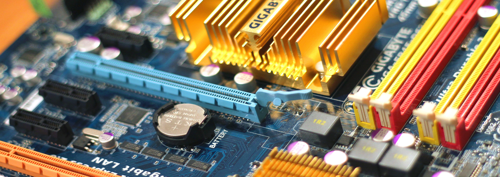

samtax
by Samson T
Menu
Home
Pacman
Slope
.
samtax
Get Started
What is samtax?
stuff stuff and more stuff.
Stuff mid page
stuff stuff stuff
Learn More

stuff left square
stuff semi header
stuff stuff stuff
stuff right square
stuff semi header
stuff stuff stuff
stuff bottom
stuff stuff stuff stuff